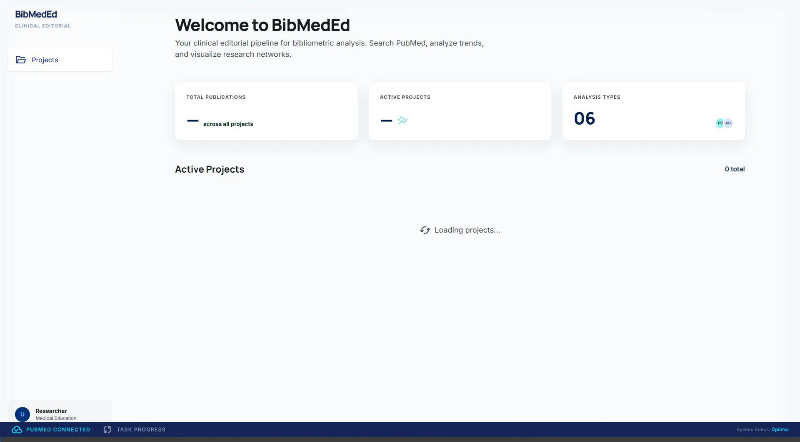
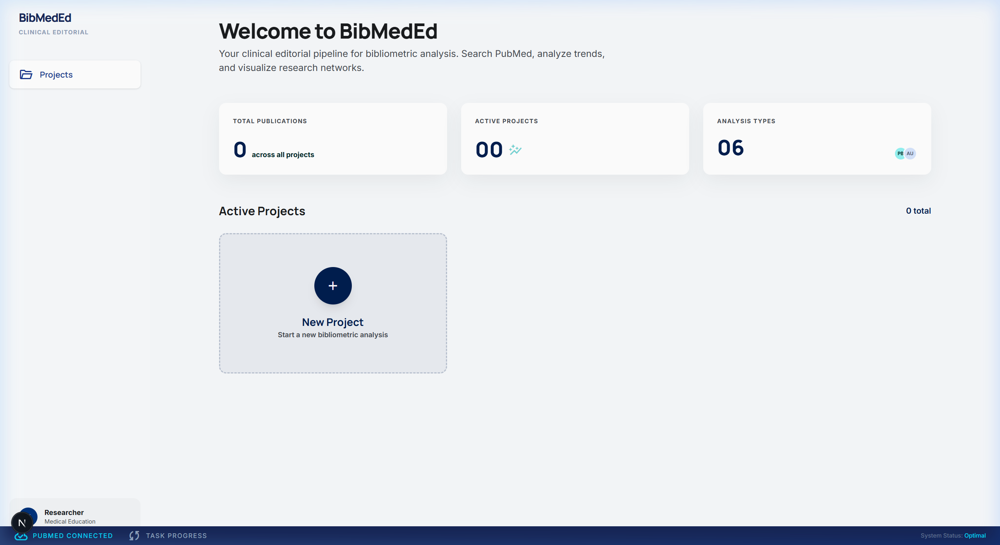
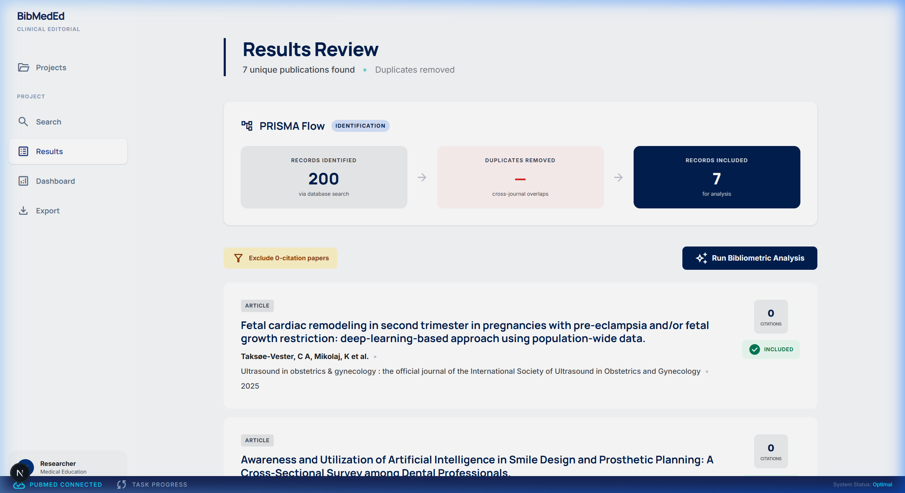
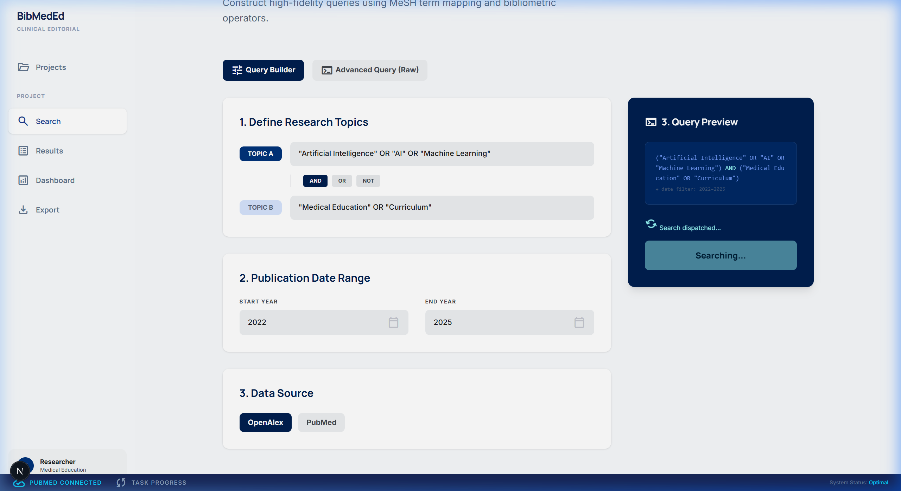

BibMedEd
Bibliometric Analysis Platform for Medical Education
BibMedEd is an open-source tool that enables medical education researchers to search bibliographic databases and perform comprehensive bibliometric analysis — all in one integrated platform. It replaces the fragmented workflow of PubMed search + Covidence + VOSviewer + CiteSpace + Excel.
Features
- Multi-database search — Query PubMed, OpenAlex, and any database with a community adapter
- Automated deduplication — Cross-database dedup by DOI and PMID
- Six analysis modules — Publications, authors, countries, keywords, citations, journals
- Interactive visualizations — D3.js co-authorship and keyword co-occurrence networks
- Reproducible methodology — Every pipeline step logged and exportable as a citable
.txtfile - Standard exports — .RIS (Zotero/EndNote), .CSV (Excel/Sheets), methodology log
User Interface Tour
The BibMedEd Agentic QA recording demonstrates the dynamic features, layout scaling, and state preservation:

Dashboard Analysis & Search Pipeline
The system gracefully visualizes bibliometric markers and updates fetching blocks via Celery sockets.



Quick Start
Open http://localhost:3000 and start analyzing.
See the Self-Hosting Guide for configuration options.
Extend It
BibMedEd uses a plug-and-play adapter pattern. Adding a new data source is a single Python file (~50 lines) that implements three methods. See the Writing Adapters guide.
Cite
If you use BibMedEd in your research, please cite:
@software{bibmeded,
title={BibMedEd: Bibliometric Analysis Platform for Medical Education},
author={Ata, Aakil},
year={2026},
url={https://github.com/ata381/BibMedEd}
}